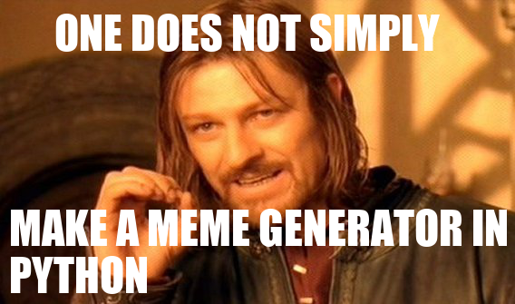

Section #8
May 31st, 2020
Written by Brahm Capoor, Parth Sarin, Juliette Woodrow and Peter
Maldonado
Finding Grandparents
Implement a function find_grandchildren, which given a dictionary
parents whose keys are strings representing parent names and
whose values are lists of those parent's children's names, produces and
return s a dictionary mapping from people's names to those lists of those
people's grandchildren's names.
For example, given this dictionary:
parents_to_children = {
'Alice': ['Bob', 'Catherine'],
'Daniel': ['Alice', 'Eve'],
'Catherine': ['Frank'],
'Eve': ['Grace']
}
Daniel's grandchildren are Bob, Catherine and Grace, since those are the
children of his children. Additionally, Alice is Frank's grandparent,
since Frank's parent is Alice's child. Therefore, calling
find_grandchildren (parents_to_children) returns this
dictionary:
{
'Alice': ['Frank'],
'Daniel': ['Bob', 'Catherine', 'Grace']
}
Note that the people who aren't grandparents don't show up as keys in the
new dictionary
Contact Tracing
Stanford has enlisted your help to do contact tracing on campus. Thanks to
cell phone data, they have a list of everyone who was on campus and their
locations throughout the day. This data is stored in a file called
locations.txt, which is provided as the constant
LOCATION_FILE. Here are the first few lines:
Leonida, 11:30, CoHo
Natalya, 10:00, CoHo
Vashti, 8:00, Mausoleum
Nathanial, 11:00, Roble Arts Gym
Alexis, 7:00, Ricker
Noelle, 9:30, Lathrop
Salvador, 10:00, Law School Terrace
Notice that each line is of the form
{name}, {time}, {location}. Each line represents a single
person-location timestamp indicating that {name} was at
{location} at {time}. So, the line
Leonida, 11:30, CoHo means that Leonida was at CoHo at
11:30am. Additionally, this file contains all the location data for every
person on campus, in 30-minute increments between 7am and 12:30pm.
At 12:30pm, Rosalind found out that they were sick, so Stanford wants to
find everyone that Rosalind came in contact with throughout the day.
Write a function find_contacts(target, location_file) which
returns a a list of people that target came in contact with
based on the data in location_file. target will
be a name from the location file. More precisely, we say that two people
"came in contact" if, at any point during the day, they were in the same
location. For example, if this was the location data:
Brahm, 8:00, CoHo
Brahm, 8:30, CoHo
Parth, 8:30, CoHo
Tori, 9:00, CoHo
then Brahm and Parth came in contact (they were both at CoHo at 8:30), but
neither came in contact with Tori.
While we don't have any requirements for how you do this, we recommend you
solve this problem in two parts:
-
Open the
LOCATION_FILE and parse the data. We suggest that
you store this data in a dictionary where every key is a name. The value
associated to a name should be another dictionary. The inner dictionary
should map a time to a location if the person was in that location at
that time. For the CoHo example above, this would look like:
{
'Brahm': {'8:00': 'CoHo', '8:30': 'CoHo'},
'Parth': {'8:30': 'CoHo'},
'Tori': {'9:00': 'CoHo'}
}
-
After you've loaded the data, extract the
target's path
through the day. Compare everyone's path to the target's path and add
their names to a list if they came in contact.
ASCII Art
ASCII art is a form of art that uses text characters to create images. For
example, here's some ASCII art of a unicorn:
|
\ /
~~%%%%%%%%_,_, --_,* ---
~~%%%%%%%%%*"/./ _,=" / \
~~%%%%%%%*' / *.=" |
~~%%%%%%%%* . ,__*.
~~%%%%%%%%* * \O\*
~~%%%%%%%%* * *
~~%%%%%%%%* *. _* *
~~%%%%%%%%* *'`*._ `*
~~%%%%%%%%%* * `*. (,*
~~%%%%%%%%* * *._\_.*
~~%%%%%%%* *
An ASCII image of a unicorn
In this problem, we'll write a function
convert_img_to_ascii(img_file)
that takes in an image and converts it into ASCII art. We're going to do
this by replacing each pixel in the image with an ASCII character. Here
are the characters we'll use: ▓▒░ (these are stored in a
constant called IMG_CHARS`). The leftmost character will
replace dark pixels and the rightmost character (which is just a space)
will replace light pixels. More precisely, for every pixel in your image,
you should compute the average RGB value (just like we did to convert an
image into grayscale). Then, based on that value, replace the pixel with
one of the characters:
avg < 64: '▓'
64 <= avg < 128: '▒'
128 <= avg < 192: '░'
192 <= avg: ' '
In other words, if the average value is less than 64, use the darkest
character. If it's between 64 and 128, use the next character, etc. We've
provided the numerical breakpoints as a constant
BREAKPOINTS = (64, 128, 192).
Then, print out each ASCII character in order, keeping in mind that each
row of pixels in the image should be represented by a separate line of
text in your terminal. We've provided an image of a panda that you can
test your code on:
If you want to test this code on your own image, you should make use of
our resize_img_for_ascii(img) function, which takes a
SimpleImage and stretches it out so it's twice as wide. This is necessary
because although pixels are square, our characters (like ▓)
are rectangular: they're about twice as tall as they are wide. If you make
the image twice as wide, then the ASCII will look correct.
To debug your code, you can also try this out on the image of our hapless
Head TA:
which gives this (mildly terrifying) result:
░░▒▒▓▓▓▓▓▓▓▓▓▒░
░▒▓▓▓▓▓▓▓▓▓▓▓▓▓▓▓▓▒▒▒
░▒▓▓▓▓▓▓▓▓▓▓▓▓▓▓▓▓▓▓▓▓▓▓▒
▒▒▓▓▓▓▓▓▓▓▓▓▓▓▓▓▓▓▓▓▓▓▓▓▓▓▓▒
░▒▓▓▓▓▒▒▒▒▒▒▒▒▒▒▒▒▓▓▓▓▓▓▓▓▓▓▓▒
▒▓▓▓▒░░░░░░░░▒▒▒▒▒▒▒▒▓▓▓▓▓▓▓▓▓░
▒▓▓▒ ░░░░░▒▒▒▒▒▒▒▒▒▒▒▒▓▓▓▓▓▓░
▓▓▒░ ░▒▒▒▒▒▒▒▒▒▒▒▒▒▓▓▓▓▓▒▓▓▓▓▓
▒▒░░▒▓▓▓▓▓▓▓▒▒▓▓▓▓▓▓▓▓▓▓▓▒▒▓▓░
▒░░▒▒▒▓▓▓▓▓▒░▒▓▓▓▓▓▓▓▓▓▓▒▓▓▓▒
░░░ ░░░▒▒▒▒░░░▒▒▓▓▓▓▒▒▒▒▒▒▓▓▒▒
░▒░ ░░▒▒░░░░░▒▒▒▒▓▒▒▒▒▒▒▒▒▓▓▒
░░ ░░▒▒▒░░▒▒▒▒▓▓▓▒▒▒▓▒▓▒▒▓▒▒
░▒▒▓▒▒░░░▒▒▒▒▒▓▓▓▓▒▓▒░
░▒▒▒▒▒░░░▒▒▒▒▓▓▒▒▓▓▒▒
░░░░░░░▒▒▒▒▒▒▒▒▒▓▒▒▒
░░░░░░░░▒▒▒▒▒▒▒▓▓▓▓░
░░░▒▒▒▒▒▓▓▓▓▓▓▓▓▓▒▒
░░░░░░▒▒▒▓▓▓▓▓▓▓▒▒▒
░░░░░░░░▒▒▒▒▒▒▒▒▒▒▒
▒░ ░░░░░░░░▒▒▒▒▒▒▒▒▒▒▒
░▒ ░░░░░░░░░░░░▒▒▒▒▒▒▒▒▒▒▒▒░░
░▒▓▓▓░ ░▒▒░░░░░▒▒▒▒▒▒▒▒▒▒▒▒▒▓▒░ ░▒░
░▒▒▓▓▓▓▓▓▓▓░ ░▒▒▒▒░░▒▒▒▒▒▒▒▒▒▒▒▒░ ▒▓▓▓░
▒▒▒▓▓▓▓▓▓▓▓▓▓▓▓▓▓▒ ░▒░░░▒▒▒░░░░▒▒▒░ ░▒▓▓▓▓▓▓▓▒░
░▒▓▓▓▓▓▓▓▓▓▓▓▓▓▓▓▓▓▓▓▓░ ░░░░░▒░░░░░░░░░░░▒▓▓▓▓▓▓▓▓▓▓▓▓░
ASCII art of Brahm
Polling
As the quarter comes to an end, Brahm has been getting disorganized
juggling his head TA duties, graduation, and rewatching all of the
Avengers movies. He needs your help with something pressing: he wants to
poll all of the SLs about which of the Avengers they think would win in a
battle. Help Brahm do this by writing a PollPoll class with
four functions: __init__, add_option,
vote_for, and get_winner.
Once implemented, add_option(self, option) should add an
option that can be voted for into the poll. If the option has already been
added, calling add_option shouldn't do anything.
vote_for(self, option) should record a vote for that option.
get_winner(self) should return the name of the option which
received the most votes. If there's a tie, get_winner can
break it arbitrarily.
We're leaving the implementation up to you, but we strongly recommend that
you start by thinking about the data structure that you'll use to record
the votes.
Altogether, you should be able to use the class like this:
def main():
poll = Poll()
poll.add_option('Iron Man')
poll.add_option('Captain America')
poll.add_option('Black Widow')
poll.vote_for('Iron Man')
poll.vote_for('Iron Man')
poll.vote_for('Iron Man')
poll.vote_for('Iron Man')
poll.vote_for('Captain America')
poll.vote_for('Black Widow')
poll.vote_for('Black Widow')
poll.vote_for('Black Widow')
poll.get_winner() # => 'Iron Man'
if __name__ == "__main__":
main()
Sentiment Analysis
In this problem, you will get practice with text classification which
organizes text into groups. Brahm has a list of some puns that he recently
came up with and wants your help classifying them into categories (If you
want to try something other than Brahm's puns, you can also analyze
random_sentences.txt). Your main goal is to find the pun that
most expresses a given emotion. We have broken this down into milestones
for you.
Milestone 1: Making an Emotion Dictionary
You are given an "emotion-lexicon" which categorizes each word based on
whether it expersses one of these ten emotions:
- anger
- anticipation
- disgust
- fear
- joy
- negative
- positive
- sadness
- surprise
- trust
Each line in the file starts with a word. The following word on the line
is one of these ten emtions which is followed by a number, 0 or 1, which
explains if the word expresses that emotion. If a word has a 1 that means
it does express that emotion and if it has a 0 it does not express that
emotion.
def make_emotion_dict(filename):
"""
This function takes in an emotion lexicon and returns a dictionary where
the key is the word and the value is the score for that word for the given EMOTION.
Each line on the file has 3 values. The first is the word, the second is an emotion, and the third is
a value (either 0 or 1) which explains if the word expresses that emotion.
In this function, you should create a dictionary for every word in the file and store its score
for the emotion that the emotion constant is equal to.
For example, the line 'memorable joy 1' would correspond to {'joy': 1}
whereas the line 'memorandum fear 0' would not correspond to any value in the dictionary because it is the wrong emotion.
"""
pass
Milestone 2: Scoring a sentence
You are given a single sentence represented as a list of words and the
complete emotion dictionary that you built in the previous milestone. Your
job is to go over each word in the sentence and sum up their corresponding
values in the dictionary. If a word is not in the dictionary, it can be
ignored in the sum. Your dictionary stores lower case versions of words,
so make sure to covert every word to lower case before checking if it is
in the dictionary.
def sum_sentence(sentence, emotion_dict):
"""
This function goes over each word in the sentence and sums up their corresponding values in the dictionary.
If a word is not in the dictionary, it is ignored. Make sure that words can be any case.
It returns this sum.
>>> emotion_dict = {'happy':1, 'birthday':1}
>>> sum_sentence(['Happy', 'Birthday', 'Brahm!'], emotion_dict)
2
"""
pass
Milestone 3: Reading a File
You are given a filename, the emotion dictionary you built up in a
previous milestone, and list of all stop words, which are words like 'it'
and 'the', which don't carry any inherent sentiment. This function should
return the sentence with the highest score for the given EMOTION constant.
Each line in the file is a sentence. Before summing up the values for that
sentence, you should call the remove_stop_words function
which removes any small words that will not be helpful in classifying the
sentence.
def read_file(filename, emotion_dict, stoplist):
"""
This function reads in a file where each line is a sentence. It should remove all stopwords
from a tweet and then calculate its sum. Stopwords are short words that won't correctly impact
the sentiment analysis of a sentence, so it is best practice to remove these before doing any classification.
Use the helpful remove_stopwords() function that we wrote for you. Don't forget to pass in stoplist.
This function should return the sentence with the highest score.
"""
pass
Meme Generator
Brahm wants to stay in touch with his SLs during the summer break. He
wants to send them memes, and thinks that Python can help create them
automatically!
Our goal is to implement the MemeGenerator class in
memegenerator.py for use in the following program:
# import the MemeGenerator class from memegenerator.py
from memegenerator import MemeGenerator
def main():
# initalize the meme generator with an image
meme_gen = MemeGenerator('one-does-not.png')
# add text to the top and bottom of the meme
meme_gen.add_text('ONE DOES NOT SIMPLY', 60, 5)
meme_gen.add_text('MAKE A MEME GENERATOR IN PYTHON', 10, 220)
# generate the meme!
meme_gen.render()
if __name__ == '__main__':
main()
(Feel free to change this program to generate different memes!) When we
run memegen_test.py, we generate this variation of a classic
meme:

Implement the following methods in the MemeGenerator class:
-
__init__(self, filename): the constructor which initializes
the meme's image, and accepts as a parameter the filename of the image.
set_image(self, filename): updates the meme's image.-
add_text(self, text, x, y): records the string
text
to be placed at position (x, y) on the meme.
Note: SimpleImage supports a
create_text method that you can use by calling
img.create_text(text, x, y, font_filename). The
text is the text that you want to draw onto the image,
x and y are the coordinates of the top-left
corner of the text, and font_filename is the filename that
contains the font you want to draw the text in (usually this ends with
.ttf). Optionally, you can also add a size parameter and a
color parameter if you want to change the size of the text or the color of
the text. You might do that by calling
img.create_text(text, x, y, font_filename, size=10,
color='white')
to create 10pt white text.